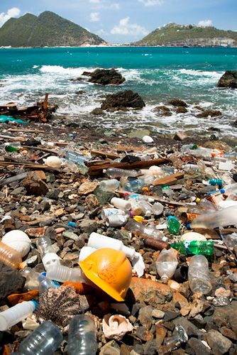

♡ Apa Itu Pencemaran Lingkungan?
Pencemaran lingkungan adalah masuknya atau dimasukkannya zat, energi, makhluk hidup, atau komponen lain ke dalam lingkungan yang menyebabkan kualitas lingkungan menurun sehingga tidak dapat berfungsi sebagaimana mestinya. Pencemaran dapat terjadi ketika lingkungan menerima bahan pencemar dalam jumlah yang melebihi kemampuan alam untuk menguraikan atau menetralkannya. Bahan pencemar tersebut dapat berasal dari kegiatan manusia maupun proses alam.
Namun, sebagian besar pencemaran yang terjadi saat ini berkaitan dengan aktivitas manusia, seperti kegiatan industri, transportasi, pertanian, rumah tangga, dan pembuangan sampah yang tidak dikelola dengan baik. Kebiasaan membuang sampah sembarangan, menggunakan plastik secara berlebihan, serta membuang limbah ke sungai dapat membuat lingkungan menjadi tercemar dan mengganggu keseimbangan ekosistem.
Pencemaran juga dapat terjadi secara perlahan sehingga sering tidak langsung disadari. Misalnya, sampah plastik yang dibuang sembarangan membutuhkan waktu yang sangat lama untuk terurai. Sampah tersebut dapat menumpuk di tanah, terbawa oleh aliran air, dan akhirnya masuk ke sungai atau laut. Jika jumlahnya terus bertambah, pencemaran dapat menjadi semakin sulit untuk dikendalikan. Oleh karena itu, kebiasaan menjaga kebersihan perlu dilakukan secara konsisten, bukan hanya ketika lingkungan sudah terlihat kotor.